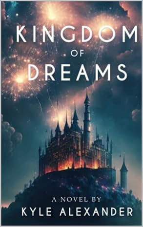
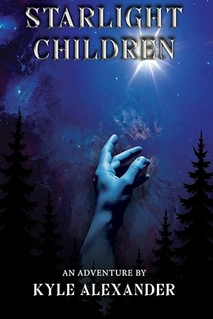

★★★★★
This book is a great work of imagination, fantasy, and adventure. It is an entertaining story of good vs evil with hidden gems of childlike wonder. If you are like me and enjoy books like Narnia, you’ll love this book!— Roselyn Ayers, Amazon
My books
One dream-world adventure that's out now, and the first book of a bigger series that's on the way. Click a cover for the full pitch, a way to buy it, and possibly too much detail.
Book One · Standalone

When the children of her town stop waking up, ten-year-old Sam Wilde has to go back into the dream world to save them. No pressure.
Read more →Starlight Children Adventures · Book One

A moon boy, a girl who's always wanted more, some pirates, and a set of stones nobody fully understands yet. Coming 2026, allegedly on schedule.
Read more →My story
I'm from northwestern Pennsylvania, I write full-time now (or at least I'm trying to make "full-time" a real sentence and not just a goal), and most of what I write is meant to be read out loud — the kind of book you end up doing voices for. Here's how I actually got here.
Elementary school
I wrote a story young enough that I don't fully remember writing it, but a teacher liked it enough to have me type it up. Peaked early, some might say.
2010
A friend texted me late one night asking for a story. I wrote her one. She read it and told me flat-out it was good, and that I needed to actually keep writing. I believed her.
2015
Long before it was anywhere close to a book, Starlight Children started as just an idea I couldn't put down.
2017
My brother Alexander came up with the premise for what would become Kingdom of Dreams. I fell in love with it and started writing.
2020
Finishing his story stopped being a someday project and became something I needed to do — to prove I could, and for him.
2023
My first independently published book, co-credited to Alexander — the way it always should've been.
2026
The idea from 2015 finally made it all the way to a shelf.
Next year or so
Currently in progress. No promises on the "or so."
"In the summer of 2016, my brother came up with a premise for a story. Falling in love with the idea, I devoted my time to writing it. In early 2020, he passed away. I finished the book to prove that I could, and as a love letter to him."
— from an earlier author bio, in his own words
Anyway. Thanks for reading this far — most people bail after the pirates. There's more books coming, and a newsletter if you want to know when.
What readers say
★★★★★
This book is a great work of imagination, fantasy, and adventure. It is an entertaining story of good vs evil with hidden gems of childlike wonder. If you are like me and enjoy books like Narnia, you’ll love this book!— Roselyn Ayers, Amazon
★★★★★
Some people would say that art can only be classified as a piece of canvas smeared with paint. I say that if a book is written well enough, it can be a work of art too. That’s exactly what Kyle Alexander presented us readers with. It’s a masterpiece that you wish would never end.— Kayla Kutz, Amazon
★★★★☆
There are a lot of fun fantasy concepts here! It’s a really positive story that doesn’t leave you feeling heavy. The story is cute and original.— Abby, Amazon
★★★★★
This is such an incredible story that's full of adventure, fantastical beings, unlikely hero's and friendships that are stronger than the toughest challenges.— Janessa Ginder, Amazon
★★★★★
If you enjoy sci-fi adventures with strong character development, imaginative settings, and a hint of romance, Starlight Children is definitely worth the read.— Jenna C, Amazon